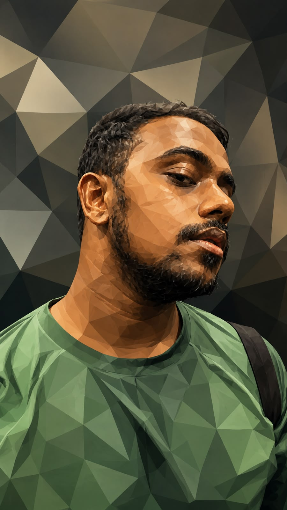
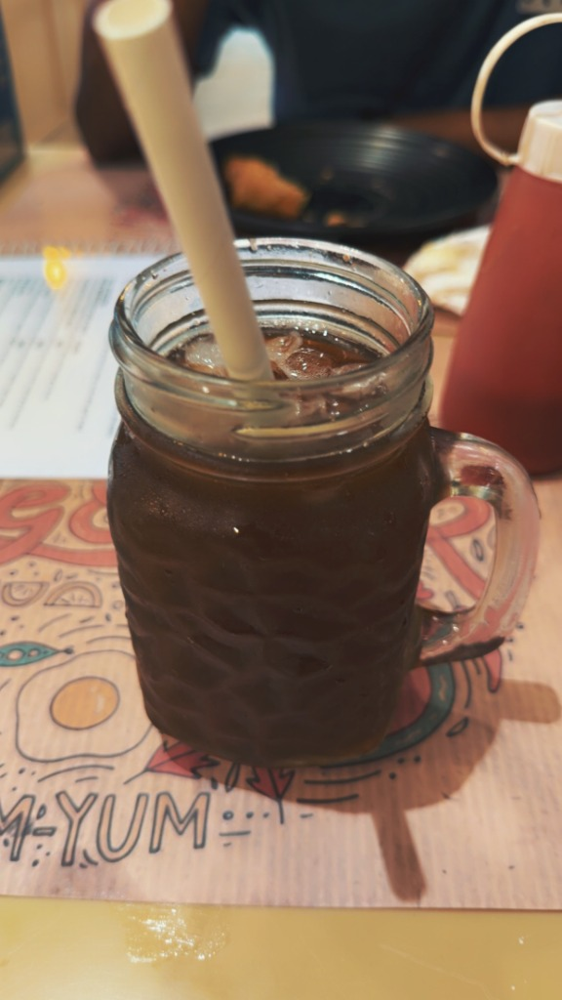
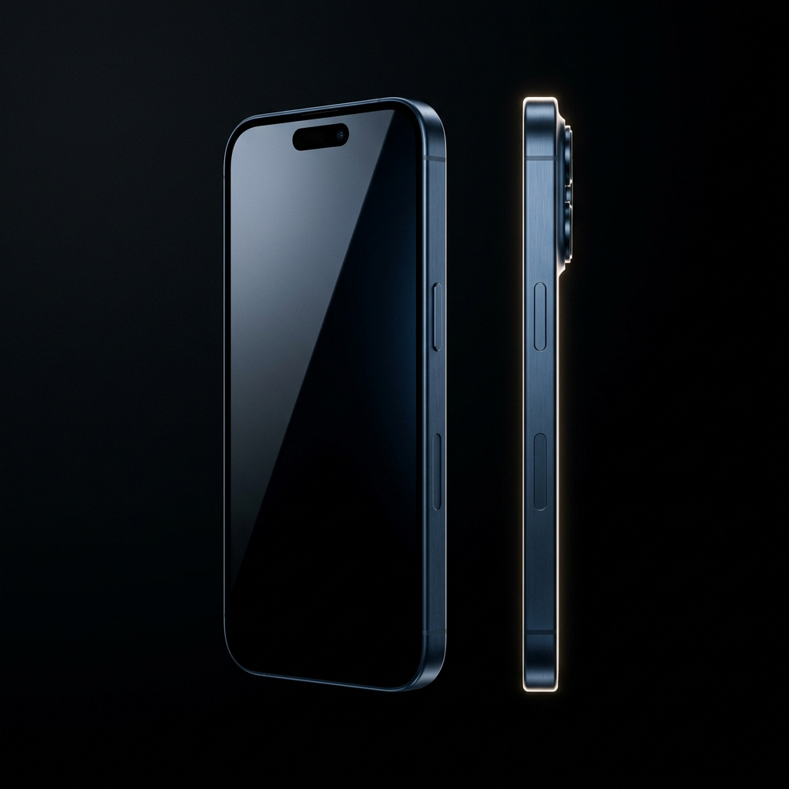

Agentic Core
High-throughput autonomous agent executor built around low-latency LLM routing.
PYTHON · GROQ API · PYTORCH · NEXT.JS · REDISI’m Atulya — a UI/UX-minded designer and AI builder turning complicated ideas into interfaces people actually want to touch.

ATULYA / 2026I design systems with personality: clear flows, sharp visual hierarchy, and just enough weirdness to make an experience memorable. AI is my favourite material; UX is the point.
Interfaces, intelligent systems, and an unreasonable amount of curiosity.
agent.run()
↳ thinking...An autonomous agent executor with high-speed LLM routing — reimagined as a controllable product experience.
VIEW CASE STUDY ↗ 02 / RESEARCH × PRODUCTComplex knowledge graphs, spatialized for extreme-accuracy reasoning.
EXPLORE ↗ 03 / COMPUTER VISIONEdge analytics that helps computers see the bigger picture.
VIEW PROJECT ↗ 04 / PREDICTIVE ANALYTICSTime-series forecasting shaped around the people behind the data.
VIEW PROJECT ↗High-throughput autonomous agent executor built around low-latency LLM routing.
PYTHON · GROQ API · PYTORCH · NEXT.JS · REDISHierarchical knowledge graphs embedded into Poincaré disk spaces for zero-shot reasoning.
PYTHON · PYTORCH GEOMETRIC · FASTAPILow-power spatial intelligence and multi-object tracking designed for edge hardware.
C++ · OPENCV · TENSORRT · MQTTBehavioral cohort analysis and forecasting to make retention patterns visible.
PYTHON · PANDAS · SCIKIT-LEARN · KAFKA


I share the experiments, lessons, and behind-the-scenes moments that don’t fit into a case study.
The gear behind the pixels, builds, captures, and rabbit holes.

SMARTPHONE LAPTOP
LAPTOP DISPLAY
DISPLAY